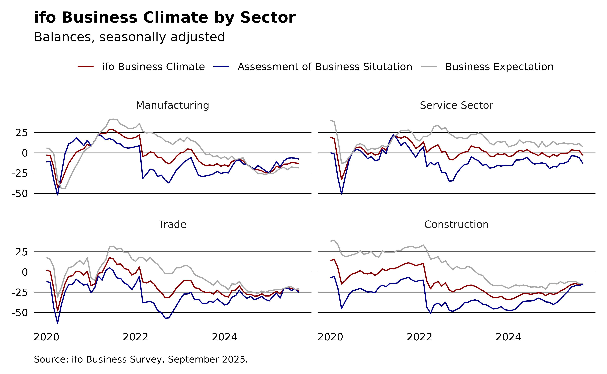
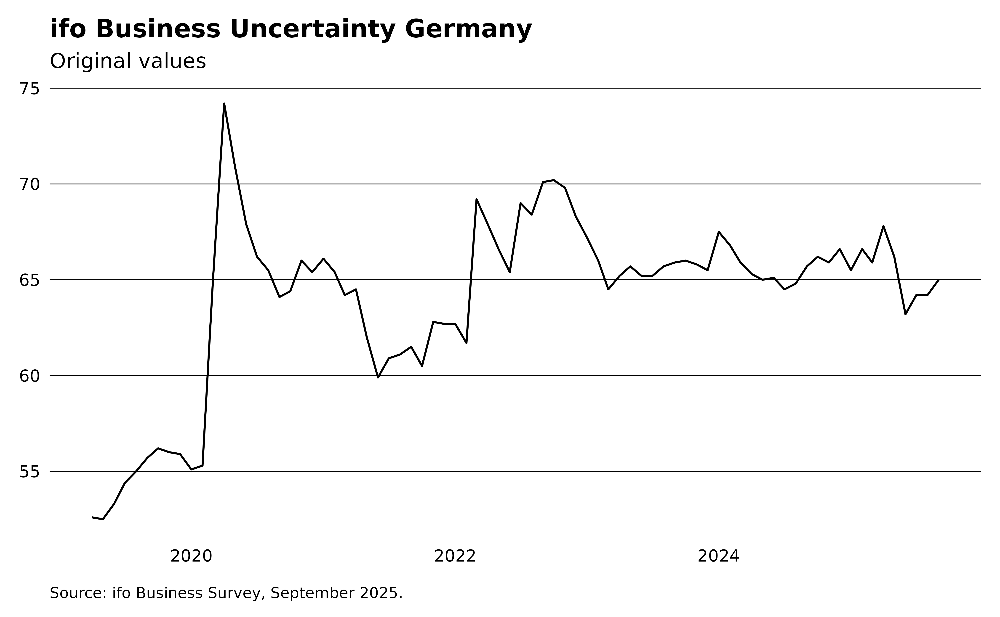

This article demonstrates how to access the ifo Business Climate data and reproduce some of the plots from the ifo website.
The ifo Business Climate is derived from approximately 9,000 monthly responses collected from businesses across manufacturing, services, trade, and construction sectors. Companies are asked to evaluate their current business conditions and forecast their expectations for the next six months. They can describe their current situation as either “good,” “satisfactory,” or “poor,” and their expectations for the coming six months as “more favorable,” “unchanged,” or “less favorable.”
The balance value for the current business situation is calculated as the difference between the percentages of responses indicating “good” and “poor,” while the balance value for expectations is the difference between the percentages of “more favorable” and “less favorable” responses. The overall business climate index is a transformed average of these balance values. To calculate the index values, the transformed balances are normalized to the average of the year 2015.
Creating a new theme
We will start with creating a theme that is somewhat similar to the style of the ifo website. For more information on how to create custom themes, see the ggplot2 documentation or see examples of themes in the ggthemes package.
library(ggplot2)
theme_ifo <- function(...) {
theme_minimal(...) +
theme(
legend.title = element_blank(),
legend.position = "top",
plot.title = element_text(face = "bold"),
plot.caption = element_text(
hjust = 0, vjust = 0, size = 8, margin = margin(10, 0, 0, 0)
),
panel.grid.major.y = element_line(color = "black", linewidth = 0.2),
panel.grid.major.x = element_blank(),
panel.grid.minor = element_blank(),
axis.text = element_text(color = "black"),
axis.title = element_blank(),
plot.margin = margin(10, 10, 10, 10)
)
}ifo Business Climate Germany
library(dplyr)
library(ifo)
climate <- ifo_business()
climate |>
filter(series == "index") |>
ggplot(aes(x = yearmonth, y = value, color = indicator)) +
geom_line() +
labs(
title = "ifo Business Climate Germany", subtitle = "Seasonally adjusted",
caption = sprintf(
"Source: ifo Business Survey, %s.", format(max(climate$yearmonth), "%B %Y")
)
) +
scale_color_manual(
values = c(climate = "darkred", situation = "darkgrey", expectation = "darkblue"),
labels = c(
"ifo Business Climate",
"Assessment of business situtation",
"Business expectation"
)
) +
theme_ifo()
ifo Business Climate by Sector
sectors <- ifo_business("sectors") |>
filter(
series == "balance",
sector %in% c("manufacturing", "services", "trade", "construction"),
yearmonth >= "2020-01-01"
) |>
mutate(
sector = factor(sector,
levels = c("manufacturing", "services", "trade", "construction")
)
)
ggplot(sectors, aes(x = yearmonth, y = value, color = indicator)) +
geom_line() +
facet_wrap(~sector,
labeller = labeller(sector = c(
manufacturing = "Manufacturing",
services = "Service Sector",
trade = "Trade",
construction = "Construction"
))
) +
labs(
title = "ifo Business Climate by Sector",
subtitle = "Balances, seasonally adjusted",
caption = sprintf(
"Source: ifo Business Survey, %s.", format(max(sectors$yearmonth), "%B %Y")
)
) +
scale_color_manual(
values = c(climate = "darkred", situation = "darkgrey", expectation = "darkblue"),
labels = c(
"ifo Business Climate",
"Assessment of business situtation",
"Business expectation"
)
) +
theme_ifo()
ifo Business Uncertainty Germany
climate |>
select(yearmonth, uncertainty) |>
tidyr::drop_na() |>
ggplot(aes(x = yearmonth, y = uncertainty)) +
geom_line() +
labs(
title = "ifo Business Uncertainty Germany", subtitle = "Original values",
caption = sprintf(
"Source: ifo Business Survey, %s.", format(max(climate$yearmonth), "%B %Y")
)
) +
theme_ifo()